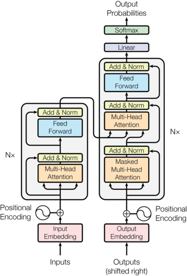

-
Assuming we now understand how Multi-Head Attention work, let's try to
implement the actual architecture of the model.

-
Here we first predefine the
LayerNorm module from my
previous post; though here they added learnable coefficients for the
output of the layer norm: a_2, b_2.
class LayerNorm(nn.Module):
def __init__(self, features, eps=1e-6):
super().__init__()
self.eps = eps
self.a_2 = nn.Parameter(torch.ones(features))
self.b_2 = nn.Parameter(torch.zeros(features))
def forward(self, x):
batch_size, length, feature_dim = x.shape
output = torch.zeros_like(x)
mu = x.mean(dim=-1, keep_dim=True)
var = x.var(dim=-1, keep_dim=True)
output = self.a_2 * (x - mu) / torch.sqrt(var + self.eps) + self.b_2
return output
-
The left block of the architecture is called the
encoder and we will start from here.
Encoder
-
If you look at the encoder, there are
N×
for each of the blocks in the architecture, which stands for needing
multiple copies of those blocks. We use the iterator pattern +
nn.ModuleList here to do so.
-
If you are not familiar with
nn.ModuleList, it's a way to
store a list of nn.Module, which is if you recall the is
ABC(Abstract Base Class) that we inherit when creating
PyTorch models.
-
We also conduct a
LayerNorm for the output of the encoder
block.
class Encoder(nn.Module):
def __init__(self, layer, N):
super().__init__()
self.layers = nn.ModuleList([copy.deepcopy(layer) for _ in range(N)])
self.norm = nn.LayerNorm(layer.size)
def forward(self, x, mask=None):
for layer in self.layers:
x = layer(x, mask)
return self.norm(x)
-
Note that in the diagram, the
LayerNorm() goes
after the sublayers, which is called Post-LayerNorm.
However, more recent implementations use
Pre-LayerNorm, which means that it is applied before
the sublayer, which is what we follow here.
-
We can also notice that there is a
skip-connection right after the Multi-Head-Attention
block, which we actually implemented from the ResNet paper before!
-
After the MHA block, we pass it to the feed forward sublayer at this
point.
-
At this point, a something you should be thinking of is the dimensions
at each pass through the encoder.
class EncoderLayer(nn.Module):
def __init__(self, size, self_attn, feed_forward, dropout):
super().__init__()
self.self_attn = self_attn
self.feed_forward = feed_forward
self.size = size
self.norm1 = nn.LayerNorm(size)
self.norm2 = nn.LayerNorm(size)
self.dropout = nn.Dropout(dropout)
def forward(self, x, mask):
norm_x = self.norm1(x)
attn_out = self.self_attn(norm_x, norm_x, norm_x, mask)
x = x + self.dropout(attn_out)
norm_x = self.norm2(x)
ff_out = self.feed_forward(norm_x)
x = x + self.dropout(ff_out)
return x
-
So let's go through it as an example. Say our input embeddings are in
the shape
[batch, seq_len, emb_len] or
[32, 128, 512] if numbers makes more sense.
-
When we conduct
LayerNorm on x.
LayerNorm actually returns the same dimension as its
input so we're still at [batch, seq_len, emb_len] after
the first self.norm1(x).
-
Now we pass this through our MHA block. We know that our attention
output from the MHA block is actually identical to its input dimension
so it's still at
[batch, seq_len, emb_len]!
-
The feedforward network is a bit different, which we will explain
here.
FeedForward Networks (FFN)
-
The FFN is applied in both the Encoder and Decoder block and consists
of two linear transformations with a
ReLU() in between.
The dimension goes from d_model to d_ff back
to d_model, where d_ff is much larger than
d_model.
-
What we achieve with FNN is: Based on the new features that contain
context that we learned from attention, we project these features into
a higher dimension and try to learn the features, then compress the
information back.
-
Ultimately, because the attention mechanism is a Linear Combination,
we need to introduce Non-Linearity to approximate non-linear patterns
that lie in the feature space.
class PositionwiseFeedForward(nn.Module):
def __init__(self, d_model, d_ff, dropout=0.1):
super().__init__()
self.w_1 = nn.Linear(d_model, d_ff)
self.w_2 = nn.Linear(d_ff, d_model)
self.dropout = nn.Dropout(dropout)
def forward(self, x):
return self.w_2(self.dropout(self.w_1(x).relu()))
-
But back to the dimensions, because we the input dimension is equal to
the output dimension of the FNN, we would get
[batch, seq_len, emb_len] as the output of the encoder.
Positional Encoding (PE)
-
Talking about position-wise FFN, we also have to mention the
positional encoding part of the input of the model.
-
Because we are processing the embeddings in parallel, unlike a RNN, we
don't have a sense of sequence of the data. Therefore, we need to add
something to make sure the positions of the words are preserved for
the words in the sentence.
-
We use sinusoidal functions to represent this quality. Here is a great
blog post
from HF that explains PE in detail that I recommend you to take a
look.
- But in summary,
PE(pos,2i)=sin(wi(pos))
PE(pos,2i+1)=cos(wi(pos))
-
where
wi=100002i/dmodel1
and
i
represents the embedding dimension, and
pos
the position in the sentence.
-
To have an understanding of how this works, note that
wi
is decreasing as
i
increases.
-
Therefore, for different values of
i, the frequency of the sinusoidal functions (wi) will be unique; allowing each position to have a unique positional
vector of values between 0 and 1 assigned to them.
-
Then, for a single
pos, we have a vector of
i
different values that are added to the original input embeddings.
-
But how do these embeddings actually capture the meaning of position
of the words and won't it dilute the actual context of the original
embeddings
x
for attention?
-
The full proof is in the
blog post
but when we actually compute the attention score between the two
embeddings at
pos
and
pos+k, the resulting transformation gives
PE(pos+k)=Mk⋅PE(pos), where
Mk
is a rotation matrix that only depends on
k, not on
pos.
-
And the thing is when we actually calculate attention, we do
Q⋅KT; if you recall from linear algebra, dot products can be represented
as:
a⋅b=∣a∣∣b∣cos(θ).
-
Therefore, the norms of the two vectors are completely preserved and
Mk
only corresponds to the
cos(θ)
of the rotation/angle between the vectors, meaning that the attention
score actually
depends solely on the relative rotation/distance between the words
not on the absolute position!
-
I thought this was pretty cool and this intuition of rotation actually
leads to other methods for positional encoding (RoPE) but we'll stick
with sines and cosines for now.
- The actual code to implementing this is copied below.
-
Note that PEs have
.requires_grad_(False), so they are
not learnable parameters but we need to store them later when
decoding, which is why we store them as a buffer.
class PositionalEncoding(nn.Module):
def __init__(self, d_model, dropout, max_len=5000):
super().__init__()
self.dropout = nn.Dropout(p=dropout)
pe = torch.zeros(max_len, d_model)
position = torch.arange(0, max_len).unsqueeze(1)
div_term = torch.exp(
torch.arange(0, d_model, 2) * -(math.log(10000.0) / d_model)
)
pe[:, 0::2] = torch.sin(position * div_term)
pe[:, 1::2] = torch.cos(position * div_term)
pe = pe.unsqueeze(0)
self.register_buffer("pe", pe)
def forward(self, x):
x = x + self.pe[:, : x.size(1)].requires_grad_(False)
return self.dropout(x)
-
Now let's look at the block in the right, which is actually not too
different compared to the encoder.
Decoder
class Decoder(nn.Module):
def __init__(self, layer, N):
super().__init__()
self.layers = nn.ModuleList([copy.deepcopy(layer) for _ in range(N)])
self.norm = LayerNorm(layer.size)
def forward(self, x, memory, src_mask, tgt_mask):
for layer in self.layers:
x = layer(x, memory, src_mask, tgt_mask)
return self.norm(x)
-
The decoder has a very similiar structure to the encoder, but includes
memory and some masking.
-
Here the
memory stands for the output of the decoder, and
we have src_mask and tgt_mask, which
represents masked inputs, which we will cover now.
Masking
-
For the decoder, when training, we want to ensure that the model is
not seeing the entire sentance during training.
-
Instead, we want to evaluate its performance by predicting the
sequence one-by-one in order. Therefore, we pass a mask before the
softmax() function in order to prevent access to the next
token.
-
In the code below, the logic goes as: ( matrix of 1 )
→
( upper triangular matrix of 1 with 0s on the diagonal )
→
( True if value is 0 so all 0 become 1 )
→
( lower triangular matrix of 1 )
def subsequent_mask(size):
attn_shape = (1, size, size)
subsequent_mask = torch.triu(torch.ones(attn_shape), diagonal=1).type(
torch.uint8
)
return subsequent_mask == 0
-
Note that due to the introduction of masks, we need to change the
attention logic to be able to work with masks.
-
Continuing the code from the Attention post, we notice we
replace all the
0
with
-1e9, which may seem a bit strange.
-
If you recall
softmax() again,
softmax(zi)=∑eziezi.
-
If we have
0
as the masked parts, we don't actually end up obtaining probabilities
after the
softmax() as
e0=1, meaning that masked words actually get a non-zero attention score.
-
Therefore, we fix the masks as very small values, as
limx→−∞ex=0
in order to mask the words when it passes the
softmax.
def attention(Q, K, V, mask=None):
d_k = Q.size(-1)
attn_scores = torch.matmul(Q, K.transpose(-1, -2)) / math.sqrt(d_k)
if mask is not None:
attn_scores = attn_scores.masked_fill(mask == 0, -1e9)
attn_probs = attn_scores.softmax(dim=-1)
return torch.matmul(attn_probs, V)
- Now back to the DecoderLayer.
Decoder Layer
class DecoderLayer(nn.Module):
def __init__(self, size, self_attn, src_attn, feed_forward, dropout):
super().__init__()
self.size = size
self.self_attn = self_attn
self.src_attn = src_attn
self.norm1 = nn.LayerNorm(size)
self.norm2 = nn.LayerNorm(size)
self.norm3 = nn.LayerNorm(size)
self.feed_forward = feed_forward
def forward(self, x, memory, src_mask, tgt_mask):
norm_x = self.norm1(x)
self_attn_out = self.self_attn(norm_x, norm_x, norm_x, tgt_mask)
x = x + self.dropout(self_attn_out)
norm_x2 = self.norm2(x)
cross_attn_out = self.src_attn(norm_x2, memory, memory, src_mask)
x = x + self.dropout(cross_attn_out)
norm_x3 = self.norm3(x)
ff_out = self.feed_forward(norm_x3)
return x + self.dropout(ff_out)
-
And now, we have all the building blocks to make the entire
transformer architecture!
def make_model(
src_vocab, tgt_vocab, N=6, d_model=512, d_ff=2048, h=8, dropout=0.1
):
c = copy.deepcopy
attn = MultiHeadedAttention(h, d_model)
ff = PositionwiseFeedForward(d_model, d_ff, dropout)
position = PositionalEncoding(d_model, dropout)
model = EncoderDecoder(
Encoder(EncoderLayer(d_model, c(attn), c(ff), dropout), N),
Decoder(DecoderLayer(d_model, c(attn), c(attn), c(ff), dropout), N),
nn.Sequential(Embeddings(d_model, src_vocab), c(position)),
nn.Sequential(Embeddings(d_model, tgt_vocab), c(position)),
Generator(d_model, tgt_vocab),
)
return model
-
Hope this helps understand how the transformer architecture is
established!
-
For details on training, make sure to check out
Annotated Transformer.